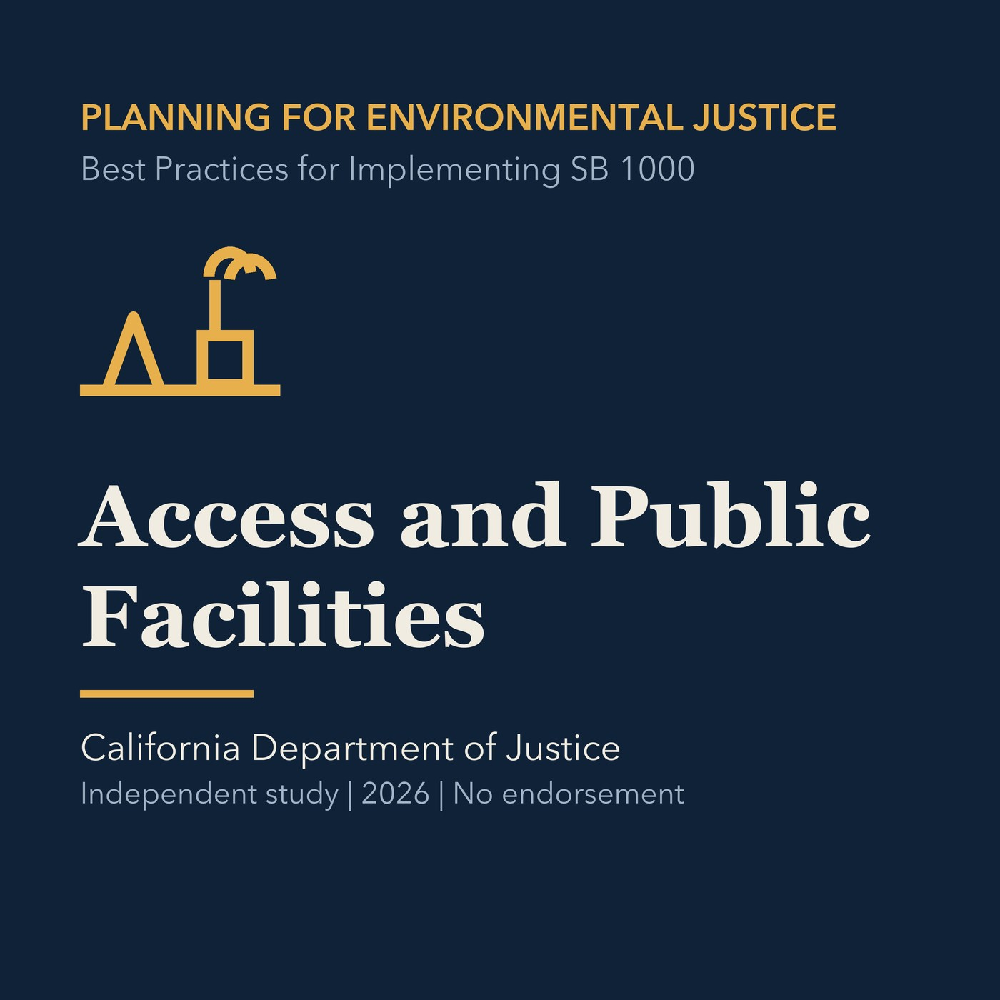

EPISODE 06
Access, Activity, and Public Facilities
Examines equitable access to public facilities, physical activity, mobility, healthy food, and other health-supporting resources.

- Stable GUID
655cc678-a701-5976-b32b-a2f1de833896- Release
- environmental-justice-land-use-planning-v2026.3
- SHA-256
008047fb76a26ec8ed5c3b070670949822e936a913a274ec446d109afde1a9b0